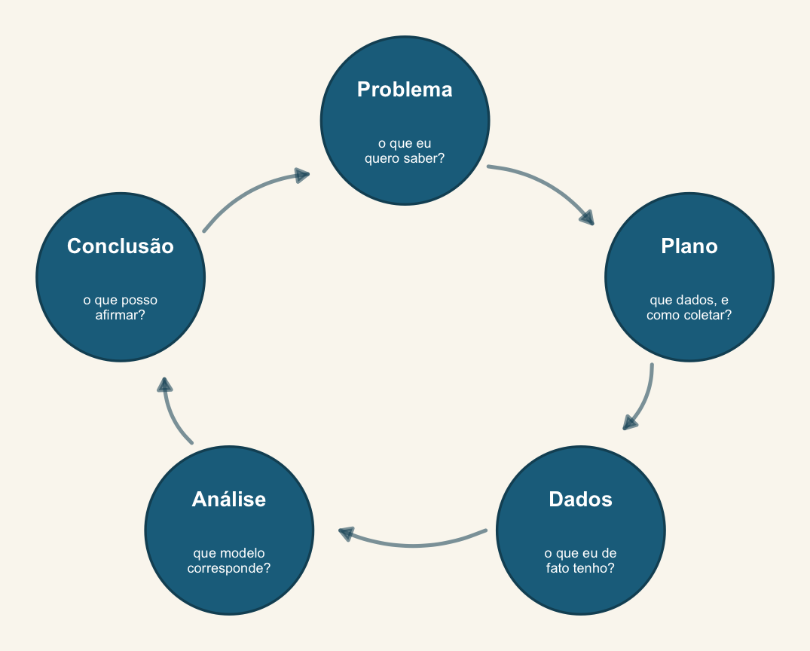

Encontro 10 · Análise de Dados Univariados · PPGBA/UFMS
25 de setembro de 2026

Hoje vocês percorrem o ciclo inteiro nos próprios dados, do Problema à Conclusão.
Bloco 1 (≈ 3 h) — Clínica. Cerca de 25 min por pessoa, com a turma toda acompanhando.
Bloco 2 (≈ 1 h) — Apresentações. 5 min cada.
Bloco 3 (≈ 30 min) — Encerramento. O que ficou de fora, e para onde ir.
O problema de um costuma ser o problema de três. Fiquem para as consultas dos colegas.
Traga, já carregado no R:
.csv ou .txt;Vinte e cinco minutos passam rápido. Chegar com o read_csv() funcionando vale cinco minutos a mais de conversa sobre o modelo.
Responda antes de chegar — as respostas determinam o modelo.
Hilborn & Mangel abrem o livro com o que um colega respondeu quando lhe perguntaram o que ele fazia da vida:
“The trouble with fish is that you never get to see the whole population. (…) you tend to get little pieces of information here and there. These bits of information are like the tip of the iceberg; they’re part of a much larger story. My job is to try to put the story together. I’m a detective, really, who assembles clues into a coherent picture.”
Vale para girino em poça, morcego em rede, planta em parcela. As cinco perguntas do slide anterior escolhem a família. As dos próximos dois decidem se o modelo tem alguma relação com o seu campo.
Schnute (1987), citado em Hilborn & Mangel (1997), p. xi.
“There is always an observation process interposed between the ecological system and our notebooks. Every effort should be made to understand, calibrate, and model the observation process.”
Eles separam a incerteza em duas, e o livro inteiro depende disso:
Hilborn & Mangel (1997), cap. 3, p. 59–61.
| No livro | Na sua tese |
|---|---|
| Viés (\(q\)): registra-se uma fração do que existe | que proporção do que estava lá você viu? é a mesma em todos os sítios? |
| Não linearidade (\(c\)): o observado cresce mais devagar que o real | seu método satura? um sítio com 200 indivíduos rende 200 registros? |
| Limiar de detecção (\(a\)): abaixo de certa densidade, nada aparece | seus zeros são ausência ou não-detecção? |
Nenhuma das três aparece no glm(). É por isso que “que modelo eu uso?” é uma pergunta que começa antes do R — e por que o Encontro 6 insistiu em perguntar o que os zeros significam biologicamente.
Hilborn & Mangel dizem que há três níveis de entender uma equação: ler a explicação de alguém, converter a equação em palavras, e explicar a origem dela a um colega.
Antes de rodar qualquer coisa hoje, faça o segundo e o terceiro: diga ao colega ao lado, em uma frase e sem notação, o que o seu modelo afirma sobre o seu bicho.
Se a frase não sair, o problema não é o R.
flowchart TD
A[Que tipo de resposta?] --> B[Contínua e simétrica]
A --> C[Contagem]
A --> D[Binária ou proporção]
A --> E[Ordinal]
B --> B1["lm() / lmer()"]
C --> C1{Sobredisperso?}
C1 -- não --> C2["glm(poisson)"]
C1 -- sim --> C3{Excesso de zeros<br/>depois da NB?}
C3 -- não --> C4["glm.nb() / glmmTMB(nbinom2)"]
C3 -- sim --> C5["glmmTMB(ziformula=)"]
D --> D1["glm(binomial)"]
E --> E1["ordinal::clm() / clmm()"]
B1 --> F{Observações<br/>agrupadas?}
C2 --> F
C4 --> F
D1 --> F
F -- sim --> G["acrescente (1 | grupo)"]
Três slides, no máximo:
Não é preciso ter resultado bonito. É preciso ter o raciocínio claro. Um modelo que não ajustou, com diagnóstico honesto, é uma apresentação melhor que um resultado significativo sem diagnóstico.
15 minutos.
Na volta: o encerramento: o arco da semana e o trabalho final.
| Relaxamos | Ganhamos | |
|---|---|---|
| E2–E3 | nada — só reorganizamos | um modelo no lugar de cinco testes |
| E4–E5 | a resposta ser gaussiana | GLM |
| E6 | a variância ser a da família | dispersão, zeros, ordinais |
| E7–E8 | as observações serem independentes | GLMM |
| E8 | os parâmetros serem fixos | posterior |
| E9 | haver um modelo certo | comparação e média |
Uma premissa por vez. Nenhum salto conceitual — só relaxamentos sucessivos do mesmo objeto.
Está na ementa e fica como panorama, sem prática em sala.
Multivariados baseados em modelos e JSDM. Quando a resposta é uma matriz de espécies, o GLM vira mvabund::manyglm(), e o modelo conjunto de distribuição (Hmsc, gllvm) acrescenta efeitos aleatórios residuais que descrevem associação entre espécies.
nlme com estruturas de correlação; INLA; modelos autorregressivos.phylolm, MCMCglmm, brms com matriz de covariância filogenética.unmarked, spOccupancy.brms.Estrutura, critérios e esqueleto em provetelab.org/analise-dados-univariados-2026-2/trabalho-final.
Combinemos agora o prazo.
Lembrete: declarar o uso de modelos de linguagem — modelo, versão, que parte do código, e os prompts críticos. A responsabilidade pelo código é de quem assina.
O material fica no ar e continua sendo atualizado:
provetelab.org/analise-dados-univariados-2026-2
Correções e sugestões por issue ou pull request no repositório.
Dúvidas depois do curso: diogo.provete@ufms.br
brms, ggplot2 e tidyverse.Análise de Dados Univariados · PPGBA/UFMS · 2026/2